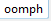
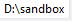
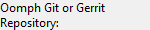
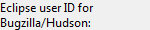
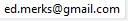
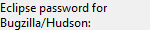
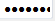
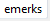

Variables Page


Variables Page |
|
The primary purpose of the variables page is to specify the values for variables. At this point in the wizard's work flow, a task list has been gathered. That process induces variables and evaluates and expands variables. Any variable with an empty value requires the user's input. All variables must specify a non-empty value in order to advance to the confirmation page. Information related to those variables is displayed on this page in a three column format:
The page has the following controls:
Displays the installation location rule that determines where installations are installed.

In this case, each installation will end up in a uniquely named subfolder of the specified root folder. |
|
|
Displays the uniquely named subfolder for the installation.
 This may be a relative path within the root folder. |
|
|
Displays the root folder for all installations.
 In this case the installation will end up in the 'D:/sandbox/oomph' folder. |
|
|
Displays the workspace location rule that determines where workspaces are provisioned.
In this case, the workspace will be located in a folder named 'ws' nested in the installation folder. |
|
Displays the Git location rule that determines where Git clones are provisioned.

In this case the clone is stored in the "git" subfolder of the installation folder with a name derived from the repository URI. |
|
|
Displays the target platform choice.
Project authors are encouraged to make use of this common variable so that multiple projects will materialize a cohesive target platform. |
|
|  |
Displays the choice of Oomph's Git remote URI.
There are typically several different URIs for accessing the same underlying repository depending on whether one wants Gerrit access or direct Git access, and whether ones wants to use SSH, HTTPS, or anonymous access. In this case, Gerrit access via SSH is chosen. |
|
Displays the JRE 1.5 location.
Standard variables are defined for various levels of the JDK. The value specified JRE should be compatible with the version specified in the label. Generally a JDK is preferred over a JRE. In this case, a Java 1.7 JDK is specified. |
|
|  |
Displays the Bugzilla/Hudson ID.
 This is generally an email address. If one doesn't have such a registered ID, 'anonymous' should be specified. |
|  |
Displays the obscured Eclipse password.
 Authenticates that the password is valid with respect to the Bugzilla/Hudson ID and the Git/ID. |
|
Displays the Git/Gerrit user ID.
 If one doesn't have such a registered ID, 'anonymous' should be specified. |
|
| Determines whether all variables are displayed or just the ones that are strictly required to proceed. In this case, all variables are being shown. |